건설기계정비산업기사 (2010-03-07 기출문제)
1과목: 건설기계정비
1. 무한궤도형 건설기계 상부 롤러를 탈착 하고자 할 때 가장 먼저 해야 할 작업은?
- 상부 롤러 플러그를 풀고 오일을 배출하는 작업
- 트랙 장력 조정용 실린더에서 그리스를 배출하는 작업
- 트랙과 스프로켓 사이에 각목을 끼우고 트랙을 드는 작업
- 유압 잭을 작동시켜 상부 롤러 위에 있는 트랙을 들어 올리는 작업
(정답률: 79%)

2. 정압과 정적의 과정을 모두 포함하고 고속 디젤기관에 적용되는 사이클은?
- 오토 사이클(Otto cycle)
- 샤바테 사이클(Sabathe cycle)
- 디젤 사이클(Diesel cycle)
- 브레이튼 사이클(Brayton cycle)
(정답률: 74%)
3. 건설기계에 사용되는 디젤유의 세탄가를 높여주는 착화 촉진제는?
- C2H5NO3
- C6H14
- C4H10
- C2H5CH
(정답률: 72%)
4. 유압 부스터식 조향 장치를 가진 도저에서 결함이 있을 경우 점검 개소가 아닌 것은?
- 브레이크
- 클러치
- 조향 클러치 유압장치
- 리코일 스프링
(정답률: 63%)
5. 건설기계의 일상 점검 중 작업 전의 점검정비사항이 아닌 것은?
- 냉각수와 그 순환회로
- 윤활유 및 연료
- 작업 장치
- 유압계 및 온도계의 상태
(정답률: 57%)
6. 스윙장치에서 소음이 나는 원인이 아닌 것은?
- 그리스 주입 과다
- 작동유 부족
- 링기어 및 피니언의 과다 마멸
- 베어링의 과다 마멸
(정답률: 88%)
7. 전자제어 연료분사장치(Common Rail) 방식에서 고압의 연료라인과 관계없는 것은?
- 커먼레일
- 연료압력센서
- 연료필터
- 연료압력조절밸브
(정답률: 83%)
8. 축전기식 방향지시등의 특징이 아닌 것은?
- 전류형과 전압형 두 종류가 있다.
- 축전기의 충ㆍ방전 작용을 이용한다.
- 회로 내부에는 다이오드를 사용한다.
- 축전기, 전자석, 접점으로 구성되어 있다.
(정답률: 46%)
9. 다음 중 버킷 준설선의 장점이 아닌 것은?
- 준설 능력이 크며, 대형 준설공사에 적합하다.
- 작업 반경이 크다.
- 토질에 따른 영향이 적다.
- 악천후나 조류 등에 강하다.
(정답률: 54%)
10. 다이얼게이지로 측정할 수 없는 것은?
- 크랭크 축 메인저널 외경
- 기어의 백래시
- 크랭크 축의 휨
- 회전체의 편심
(정답률: 74%)
11. 디젤기관에서 과급기를 설치하였을 때 얻어지는 장점이 아닌 것은?
- 과급기를 사용하기 때문에 고급연료를 사용해야 한다.
- 동일 배기량에서 출력이 증가한다.
- 엔진의 소형 경량화가 가능하다.
- 연소가 양호하여 연비가 향상된다.
(정답률: 86%)
12. 교류발전기의 장점이 아닌 것은?
- 무게가 가볍고 출력이 크다.
- 저속회전에서도 축전지의 충전이 가능하다.
- 고속회전에도 견딜 수 있다.
- 별도의 전류 조정기가 필요하다.
(정답률: 74%)
13. 교류 발전기를 분해한 후 멀티 테스터(multi tester)로 측정이 어려운 사항은?
- 다이오드 양부 판정
- 로터 코일 접지 상태
- 로터 코일 단선 상태
- 스테이터 코일 단락 상태
(정답률: 56%)
14. 30℃에서 전해액 비중이 1.215일 때 20℃의 비중은 얼마나 되겠는가?
- 1.222
- 1.232
- 1.252
- 1.282
(정답률: 60%)
15. 크레인에서 지브붐이란?
- 메인붐의 하단을 연장하는 보조붐이다.
- 메인품의 중간을 연장하는 보조붐이다.
- 메인붐의 끝단을 연장하는 보조붐이다.
- 크램셸 장착시 사용되는 보조붐이다.
(정답률: 81%)
16. 불도저 중 나무 뿌리와 잡목 제거 작업을 할 때 가장 합한 블레이드는?
- 트리 블레이드
- 푸시 블레이드
- 트리밍 블레이드
- 레이크 블레이드
(정답률: 68%)
17. 전자제어 디젤엔진의 분사량 제어에서 ECU가 필요로 하는 정보가 아닌 것은?
- 연료 압송 기간
- 제어량 연산
- 캠의 위상각
- 구동신호 출력
(정답률: 50%)
18. 롤러, 트랙, 아이들러, 쿠션 스프링, 스프로킷 등의 구성품을 무엇이라고 하는가?
- 전부 장치
- 후부 장치
- 하부 주행체
- 상부 회전체
(정답률: 88%)
19. 불도저의 삼날을 들어 올렸을 때 중립에서 아래로 내려오면 그 이유는?
- 유압펌프의 마모
- 릴리프밸브의 압력이 낮음
- 실린더 로드의 변형
- 실린더 패킹의 마모
(정답률: 70%)
20. 뒤 차축에서 과열하는 현상의 원인 아닌 것은?
- 과부하 일 때
- 베어링의 프리로드가 과대 할 때
- 기어의 백래시가 과대 할 때
- 윤활유의 양과 질이 불량 할 때
(정답률: 60%)
2과목: 내연기관
21. 일반적으로 디젤노크를 일으키는 원인이 아닌 것은?
- 연료 분사시기가 빠르다.
- 흡기 온도가 낮다.
- 냉각수 온도가 낮다.
- 압축압력이 높다.
(정답률: 50%)
22. 가스터빈 기관의 구성요소가 아닌 것은?
- 압축기
- 열교환기
- 증발기
- 터빈
(정답률: 57%)
23. 기관의 제동마력을 Lu(PS), 연료소비량을 B(kgf/I 연료의 저위발열량이 Hu(kcal/kgf)일 때 제동열효율은?
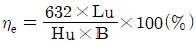
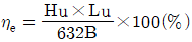
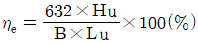
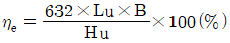
(정답률: 59%)
24. 기관의 흡ㆍ배기 밸브에서 밸브의 서징(surging)방지하는 방법으로 틀린 것은?
- 피치가 서로 다른 2종 스프링을 사용한다.
- 동일한 코일스프링의 수를 많게 한다.
- 원추형 스프링을 사용한다.
- 코일을 부등피치로 한다.
(정답률: 78%)
25. 가솔린기관에서 오일압력이 규정이상 높아지는 원으로 맞는 것은?
- 기관오일에 연료가 희석되었다.
- 기관오일의 점도가 지나치게 높다.
- 기관의 회전속도가 낮다.
- 유압조절밸브의 스프링장력이 작다.
(정답률: 82%)
26. 4행정 사이클 기관의 흡기량이 이론량(행정제적)보다 감소되어 흡입되는 이유로 거리가 먼 것은?
- 흡ㆍ배기밸브 개폐시기 조정이 불완전하다.
- 흡ㆍ배기의 관성이 피스톤 운동을 따르지 못한다.
- 흡기압력은 대기압보다 낮고 실린더 온도는 대기압보다 높다.
- 흡기 다기관에서 진공이 누설되었다.
(정답률: 49%)
27. 과급기 장착기관에서 흡입공기를 냉각시키기 위한 장치는?
- 배기가스 재순환장치
- 흡입공기 압축장치
- 인터쿨러장치
- 기변흡기장치
(정답률: 90%)
28. 동적균형이 이루어진 기관에서 크랭크축의 비틀림이 생기는 직접적인 원인으로 가장 적합한 것은?
- 배기밸브가 너무 일찍 열려서
- 실린더 내의 연소가스의 압력변화에 의하여
- 흡기 밸브가 너무 일찍 열려서
- 피스톤 링의 마모로
(정답률: 64%)
29. 압력 P=50000Pa, 체적 V1=0.5m3의 기체가 일정 압력팽창하여 체적 V2=0.8m3으로 될 때 기체가 행한 외일은?
- 1000Nㆍm
- 15000Nㆍm
- 2000Nㆍm
- 25000Nㆍm
(정답률: 40%)
30. 4행정 기관에서 흡ㆍ배기 밸브가 동시에 열려있는 구간은?
- 래그
- 리드
- 캠각
- 오버랩
(정답률: 89%)
31. 피스톤 링 조림 시 주의사항으로 맞지 않는 것은?
- 링의 순서가 바뀌지 않게 주의한다.
- 링의 면이 바뀌지 않게 주의한다.
- 절개부가 120~180 °의 각도를 두고 설치되도록 한다.
- 절개부가 축 직각방향에 설치되도록 주의하여 조립한다.
(정답률: 70%)
32. 전자제이 가솔린기관에서 이론공연비의 산정기준이 되는 요소는?
- 엔젠 오일량
- 노말 헵탄량
- 흡임공기량
- 냉각수량
(정답률: 87%)
33. 다음 그림과 같은 정적 사이클의 P-V 선도에서 실린거 총체척은?
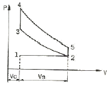
- Vc
- Vs
- Vs - Vc
- Vs + Vc
(정답률: 75%)
34. 브레이턴 사이클의 압력비가 5일 때 이론 열효율은? (단, k = 1.4이다.)
- 약 26.5%
- 약 36.9%
- 약 42.3 %
- 약 48.2%
(정답률: 39%)
35. 가솔린 기관에서 배기가스의 색깔과 기관의 상태를 표시한 내용 중 맞지 않는 것은?
- 회색이나 백색: 기관 내에서 윤활유가 연소된다.
- 당황색 : 공기청청기가 막혀있다.
- 무색 : 정상이다.
- 검음색 : 혼합기가 농후하다.
(정답률: 80%)
36. 와류실식 연소실을 갖는 디젤기관의 특징이 아닌 것은?
- 고속회전이 가능하다.
- 연소실 구조가 약간 복잡하다.
- 연료소비율이 직접분사식보다 좋다.
- 와류의 생성정도가 크다.
(정답률: 60%)
37. 압축행정 중 점화시기에 도달하기 전에 배기밸브, 카본 등의 과열에 의하여 점화되는 현상을 무엇이라고 하는가?
- 포스크 이그니션( post ignition)
- 데토네이션(detonation)
- 프리이스니션(pre-ignition)
- 정상연소(normal ignition)
(정답률: 78%)
38. 제동출력이 70kw일 때 기관의 회전수 2000rpm이면 이기관의 회전력은?
- 약 258N m
- 약 300N m
- 약 334N m
- 약 400N m
(정답률: 44%)
39. 기관의 냉각장치에서 방열기 캡에 있는 고압밸브의 역할은?
- 방열기의 내부압력을 대기압보다 높게 하여 냉각수 온도가 약 104~108℃ 정도가 되어도 비등하지 않도록 한다.
- 냉각수가 냉각될 때 방열기로 냉각수가 유입된다.
- 냉각시스템의 내부압력을 대기압보다 0.2~0.3bar 정도도 낮게 유지되도록 한다.
- 냉각시스템에 있는 튜브가 수축되는 것을 도와준다.
(정답률: 61%)
40. 디젤기관의 분사펌프에서 사용하는 딜리버리 밸브의 작용에 대한 설명으로 틀린 것은?
- 분사파이프 내의 연료압력을 증가시켜서 플런저 유효행정을 끝냈을 때 노즐의 후적을 방지한다.
- 플런저의 유효행정 후 스프링에 의해 급속히 밸브가 닫혀져 연료의 역류를 방지한다.
- 딜리버리 밸브는 플런저배럴 위쪽에 밸브시트, 개스킷, 스프링, 스템 등으로 구성되어 있다.
- 플런저 배럴 내에 가압된 연료를 분사파이프에 보내는 송출밸브이다.
(정답률: 42%)
3과목: 유압기기 및 건설기계안전관리
41. 베인 펌프에 관한 설명 중 틀린 것은?
- 카트리지 방식으로 보수가 용이하다.
- 기어펌프, 피스톤 펌프와 비교할 때, 펌프 출력에 비해 형상치수가 작다.
- 기어펌프, 피스톤 펌프에 비해 토출 압력의 맥동이 크다.
- 베인의 마모로 인한 압력저하가 적다.
(정답률: 63%)
42. 그림의 기호는 공유압 기호에서 무슨 기호인가?
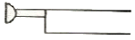
- 누름버튼
- 누름-당김버튼
- 당김버튼
- 레버버튼
(정답률: 66%)
43. 유압제어밸브 중 방향제어밸브에 속하지 않는 것은?
- 체크 밸브
- 셔틀 밸브
- 감속 밸브
- 카운터 밸런스 밸브
(정답률: 53%)
44. 유압작동유에서 요구되는 성질에 대한 설명으로 틀린 것은?
- 점도지수가 잘을 것
- 함유화성이 좋을 것
- 비압축성일 것
- 소포성이 좋을 것
(정답률: 68%)
45. 일반적으로 유압 장치의 장점이 아닌 것은?
- 속도를 무단으로 변속할 수 있다.
- 작은 장치로 큰 힘을 얻을 수 있다.
- 온도가 변화해도 점도에 영향을 미치지 않아서
- 자동제어가 가능하다.
(정답률: 81%)
46. 릴리프 밸브에서 밸브 시트를 두드려서 비교적 높은 음을 발생시키는 일종의 자려 진동현상과 가장 관계있는 것은?
- 캐비테이션
- 댐핑
- 채터링
- 압력의 맥동
(정답률: 69%)
47. 미리 정해진 순서에 따라 제어 작동의 각 단계를 순차적으로 진행해 가는 회로는?
- 감압 회로
- 중압 회로
- 시퀀스 회로
- 정토크 회로
(정답률: 75%)
48. 다음 기호 중 1방향 유동, 1방향 회전형의 정용량형 유압펌프ㆍ모터인 것은?
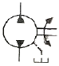
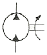
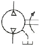
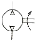
(정답률: 81%)
49. 어느 베인 모터의 공급 압력이 80kgf/cm2이고 1회전당 유량이 40cc/rev, 1200rpm으로 회전하고 있다. 이 모터의 최대 토크는 약 몇 kgfㆍm인가?
- 4.7
- 5.1
- 6.3
- 7.4
(정답률: 23%)
50. 파스칼의 원리를 설명한 것은?
- 힘은 질량과 가속도의 곱이다.
- 압력과 체적의 곱은 일정하다.
- 압력, 속도, 위치 수두의 합은 일정하다.
- 밀폐된 용기 속에 정지 유체의 일부에 가해지는 압력은 유체의 모든 부분에 동일한 힘으로 전달된다.
(정답률: 90%)
51. 전기화재의 원인으로 거리가 먼 것은?
- 누전
- 단락
- 과전류
- 접지
(정답률: 85%)
52. 운반기계를 사용하여 작업을 할 때 주의사항으로 적합하지 않은 것은?
- 출입구, 사거리, 커브에 이르면 운반기계의 취급에 주의한다.
- 둥근 물건은 차대에서 구르지 않도록 쐐기를 끼운다.
- 여러 가지 물건을 쌓을 때는 무거운 것은 밑에, 가벼운 것은 위에 쌓는다.
- 운반기계의 성능을 잘 알 경우에는 적재 하중을 규정중량의 10%까지 초과할 수 있다.
(정답률: 93%)
53. 크랭크측에서 진동을 완충시키기 위하여 진동 댐퍼를 두고 있다. 진동 댐퍼를 분리하기 위해서는 무엇을 사용하는 것이 좋은가?
- 정과 해머
- 탭과 드릴 머신
- 풀러
- 파이프 렌치
(정답률: 78%)
54. 재해통계를 나타낼 때, 연천인율 계산공식으로 맞는 것은?
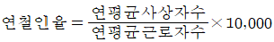
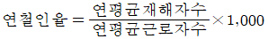
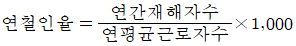
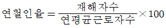
(정답률: 68%)
55. 건설기계 유압장치에서 유압오일 냉각을 위한 구비조건으로 거리가 먼 것은?
- 촉매 작용이 없을 것
- 코어 내부와 외부에 오물 협착이 안될 것
- 오일 흐름에 저항이 클 것
- 냉각 효과가 좋을 것
(정답률: 78%)
56. 공기(Air)를 사용하는 공구의 안전사항 중 바르게 않은 것은?
- 리벳터 작업시 칩이 튀어나가는 것의 방지장치를 할 것
- 소음이 심한 공기구 사용 시 귀마개를 사용할 것
- 압축기는 사용 전 안전밸브의 작동과 오일을 점검할 것
- 임펙트 렌치는 최대 토크에 맞는 회전수로 사용할 것
(정답률: 84%)
57. 무한궤도시(crawler type) 굴삭기를 트럭에 적재하는 방법으로 안전하지 못한 것은?
- 발판 위에서는 장비를 절대로 조향해서는 안 된다.
- 작업 장치는 반드시 뒤쪽으로 향하게 하고 서서히 발판위를 올라간다.
- 적재할 트럭의 주차브레이크를 완전히 작동시키고 바퀴에 고암목을 고인다.
- 좌, 우 발판을 트럭 본체의 후미 중심에 좌, 우로 균등하게 배열하고 단단히 고정한다.
(정답률: 88%)
58. 수공구의 재해 방지에 관한 유의사항 중 ()안에 적합한 내용은?
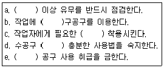
- a:사용 전에, b:적합한, c:안전모를, d:사용 전에 , e:최대한
- a:사용 전에, b:적합한, c:보호장구를, d:사용 전에 , e:무리한
- a:사용 후에, b:최대한, c:보호장구를, d:사용 전에 , e:무리한
- a:사용 전에, b:적합한, c:보호장구를, d:사용 후에 , e:최대한
(정답률: 82%)
59. 하인리히의 도미노(5단계)이론에서 재해와 가장 인접하여 있는 사항으로 무엇을 제거하면 사고와 재해로 연결되지 않는다고 했는가?
- 개인적 결함
- 사회적 결함
- 불안정 행동 및 상태
- 선천적 결함
(정답률: 90%)
60. 산소용기 운반시 밸브를 보호하기 위한 장치는?
- 캡
- 역화 방지기
- 산소 조정기
- 분기장치
(정답률: 75%)
4과목: 일반기계공학
61. 기어나 피스톤 핀 등과 같이 마모작용에 강하고 동시에 충격에도 강해야 할 때, 강의 표면을 경화하기 위하여 열처리하는 방법이 아닌 것은?
- 침탄법
- 침탄질화법
- 저온소둔법
- 고주파법
(정답률: 50%)
62. 지름이 100mm인 탄소강재를 선반 가공할 때 1회 가공소요시간을 약 몇 초인가? (단, 최전수는 400rpm이고, 이송은 0.3mm/rev이며 탄소강재의 길이는 50mm이다.)
- 20초
- 25초
- 30초
- 40초
(정답률: 30%)
63. 재료의 성질을 나타내는 세로탄성계수(영률 E)의 단위가 맞는 것은?
- N
- N/cm2
- Nㆍm
- N/cm
(정답률: 70%)
64. 다이얼 게이지로 다이얼 게이지로 측정하는 것은 가장 적합한 것은?
- 캠 축의 휨
- 나사의 피치
- 피스톤의 외경
- 피스톤과 실린더의 간극
(정답률: 84%)
65. 속이 찬 회전축의 전달마력이 7kw인 축에 350rpm으로 작동한다면 축의 전달 토크는 약 몇 Nㆍm인가?
- 101
- 151
- 191
- 231
(정답률: 41%)
66. 길이가 2m이고 직격이 1cm인 강선에 작용하는 인장 하중 1600kgt/cm2일 때 강선의 늘어난 길이는? (단, 탄성계수(E)=2.1×106kgf/cm2이다.)
- 0.1941cm
- 0.1814cm
- 0.1579cm
- 0.1327cm
(정답률: 23%)
67. 절삭 및 비절삭가공 중에서 절삭가공에 속하는 것은?
- 주조
- 단조
- 판금
- 호닝
(정답률: 65%)
68. 용적형 펌프에 해당하는 피스톤 펌프는 어느 형식에 속하는 펌프인가?
- 왕복식 펌프
- 원심식 펌프
- 사류 펌프
- 회전식 펌프
(정답률: 72%)
69. 그림과 같이 길이 ℓ인 단순보의 중앙에 집중하중 W를 받는 때 최대 굽힘모먼트(M max 점)는 얼마인가?
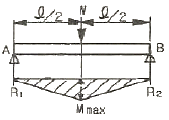
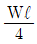
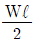
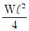
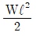
(정답률: 39%)
70. 표준 스퍼 기어에서 기어는 잇수가 25개, 피치원의 지름이 75mm일 때 모듈은 얼마인가?
- 3
- 9.42
- 0.33
- 6
(정답률: 67%)
71. V벨트 전동과 비교한 체인전동의 특징을 설명한 것으로 틀린 것은?
- 전동 효율이 높다.
- 고속 회전에 적합하다.
- 미끄럼이 없어 속도비가 일정하다.
- V 벨트 길이보다는 체인길이를 쉽게 조절할 수 있다.
(정답률: 70%)
72. 베어링에 오일 실(oil seal)을 사용하는 가장 중요한 이유는?
- 접촉이 잘 되도록 하기 위하여
- 열발산을 잘하기 위하여
- 유말이 끊어지지 않도록 하기 위하여
- 기름이 새는 것과 먼지 등의 침입을 막기 위하여
(정답률: 92%)
73. 비중이 2.7인 이 급속은 함금원소를 첨가하여 높은 강도, 가벼운 무게와 내부식성이 강한 합금으로 개선하여 자동차 트랜스미션 케이스, 피스톤, 엔진블록 등으로 사용되는 것은?
- 납
- 아연
- 마그네슘
- 알루미늄
(정답률: 79%)
74. 코인 스프링에서 코일의 평균지름 D=50mm이고, 유효 권수가 10, 소선 지름이 d=6mm이고, 축방향 하중 10N이 작용할 때 비틀림에 의한 전단응력은 약 몇 MPa 인가?
- 1.5
- 3.0
- 5.9
- 15.9
(정답률: 40%)
75. 두께가 같은 10mm인 강판의 겹치기이음의 전명 필렛용접에서 작용하중이 5000N이면, 용접부의 허용응력이 6N/mm2일 때 용접부 유효길이는 약 몇 mm이상 이어야 하는가?
- 50
- 59
- 65
- 72
(정답률: 13%)
76. 나사의 접촉면 사이의 틈이나 나사면을 따라 증기나 기름 등이 누출되는 것을 방지하는데 주로 사용하는 너트는?
- 홈붙이 너트
- 캡 너트
- 플랜지 너트
- 원형 너트
(정답률: 80%)
77. 다음 중 선반의 4대 주요 구성 부분에 속하지 않는 것은?
- 심압대
- 주축대
- 바이트
- 왕복대
(정답률: 70%)
78. 유량이 6m3/min, 손실 양정 6m 실양정 30m인 급수펌프를 1750rpm으로 운전할 때 소요 동령은 약 몇 kW인가? (단, 펌프 효율은 0.88이다.)
- 20
- 30
- 35
- 40
(정답률: 10%)
79. 가공 경화된 재료를 연한 재질상태로 돌아가게 하는 열처리 방법은?
- 불림(normalizing)
- 풀림(annealing)
- 뜨임(tempering)
- 담금질(quenching)
(정답률: 73%)
80. 선삭가공이나 드릴로 뚫어진 구멍의 형상과 치수를 정밀하게 다듬질하는 작업은?
- 리밍
- 탭핑
- 다이스 작업
- 스크레이퍼 작업
(정답률: 70%)